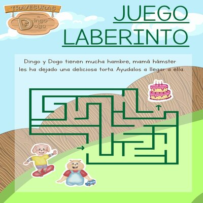
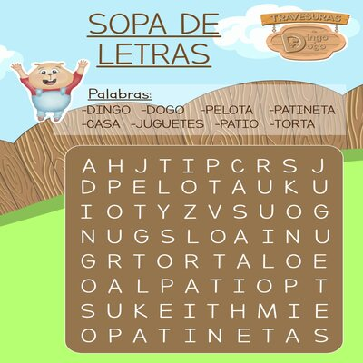

Juegos
¡Bienvenidos a nuestro portal! En esta sección encontrarás diversos juegos para que te diviertas mucho. Espero de corazón que sean de tu agrado. Por favor recomiéndanos y no olvides visitarnos.
Laberinto
Los laberintos para niños son una actividad divertida que los ayuda a desarrollar habilidades de motricidad fina, las cuales son esenciales para la caligrafía. Al mismo tiempo, los laberintos infantiles favorecen la lógica y estrategia y la capacidad de enfoque y concentración.
Sopa de Letras
La sopa de letras ayuda, principalmente, a aumentar la fluidez lingüística, a mejorar la capacidad de deletreo y enseña paciencia y persistencia. Encuentre dentro de la cuadricula de letras, las palabras colocadas tanto en posición horizontal, vertical, diagonal, arriba o abajo.
Rompecabezas
Los niños de todas las edades adoran los rompecabezas. Estos no solo son un excelente pasatiempo, sino también una herramienta educativa muy valiosa. Con nuestros juego de rompecabezas, los niños se divierten mientras aprenden más sobre nuestro cuento y la moraleja que enseña.